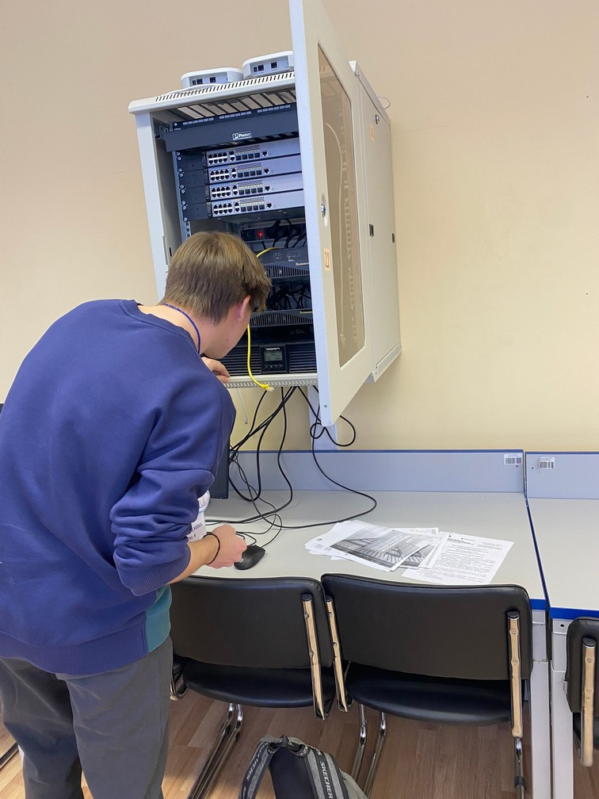
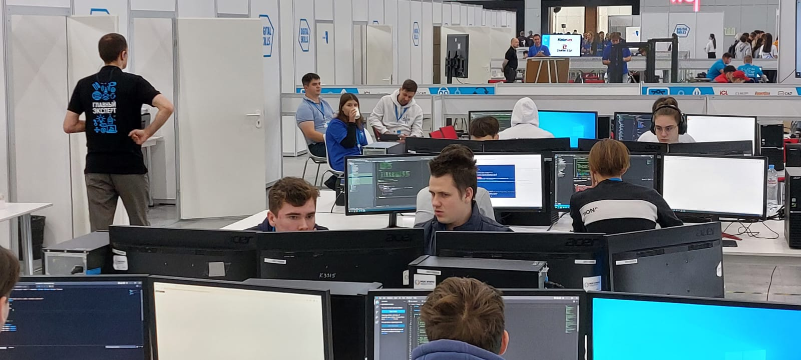
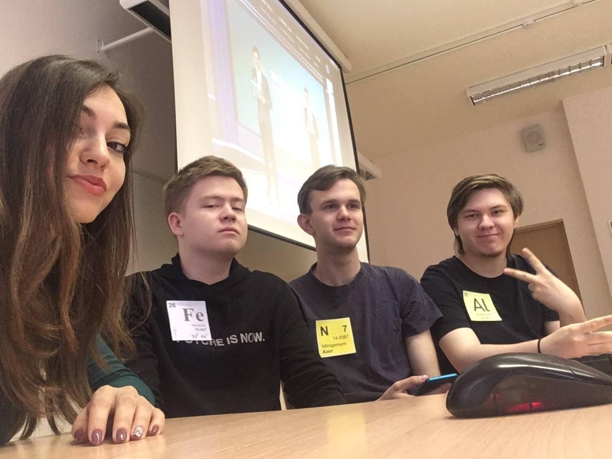

Мероприятия
19.01.2023 года в СПБ ГБПОУ «Охтинский колледж» состоялось заседание организационного комитета по реализации проектов и программ движения «Абилимпкис» на территории Санкт-Петербурга и проведения VIII Регионального чемпионата «Абилимпикс» в 2023 году. Преподавателям нашего колледжа - Ивановой Ольге Валерьевне и Харченко Людмиле Геннадьевне были вручены благодарственные письма за активное участие в развитии движения «Абилимпикс» в Санкт- Петербурге.
Поздравляем Людмилу Геннадьевну и Ольгу Валерьевну!
В сентябре-октябре 2022 года в г.Санкт-Петербурге традиционно проводится конкурс профессионального мастерства «Преподаватель года в системе образования Санкт-Петербурга». В этом году в номинации «Преподаватель года» от ПКГХ выступил преподаватель спецдисциплин отделения информационных технологий Халатов Арсен Николаевич. По результатам заочного этапа конкурса, в котором было представлено описание своего педагогического опыта, Халатов А.Н. стал финалистом.
28 октября 2022 года в Петровском колледже состоялся заключительный очный этап конкурса, в котором Арсен Николаевич выступил с большим успехом, представив жюри фрагмент одной из своих лекций «Метрология – другой взгляд».
Мы поздравляем Арсена Николаевича с успешным выстурлением!
Итоги конкурса региональным оргкомитетом будут подведены в декабре 2022 года.
25 октября 2022 года специалисты Общероссийской общественной организации «Российское содружество колледжей» провели для студентов групп ИР-20-4; ТО-21-8; ТО-20-8 увлекательную лекцию о Российском содружестве колледжей и о конкурсе «Soft Skills Russia», о том какие плюсы дает участие в Содружестве и как это помогает развивать свои навыки. Ребята узнали полезные техники, с помощью которых они смогут принимать решения, правильно ставить цели.
20-22 октября 2022 г ода в Уфе прошел II Национальный чемпионат профессионального мастерства среди лиц с нарушениями слуха Deafskills.
Целью Чемпионата является развитие и демонстрация профессиональных умений молодых людей с нарушениями слуха, содействие в трудоустройстве не слышащих молодых людей, привлечение внимания общественности к профессиональным возможностям глухих и слабослышащих. Наш колледж на Чемпионате представляли: Варварин Александр, студент группы ИР-19-4 компетенция Веб-дизайн и наставник – Силахина Татьяна Валентиновна. Александр показал отличные результаты на Чемпионате!
Поздравляем Александра и Татьяну Валентиновну и желаем дальнейших профессиональных побед!
\

20.10.2022 года на базе нашего Колледжа прошел Региональный этап Всероссийской олимпиады по укрупненной группе специальностей 09.00.00 Информатика и вычислительная техника.
В олимпиаде приняли участие студенты из 14 профессиональных образовательных учреждений города. Наш колледж представлял Барабанов Илья, студент группы ИП-19-3 специальность Информационные системы и программирование. По итогам олимпиады Илья занял 2 место!
Поздравляем Илью с победой в конкурсе и желаем новых успехов и побед!
С 21 по 24 сентября 2022 года в г. Казани, в Республике Татарстан состоялся IV отраслевой чемпионат в сфере информационных технологий DigitalSkills. К участию были приглашены сотрудники предприятий малого, среднего и крупного бизнеса отрасли, студенты учреждений среднего и высшего образования.
DigitalSkills – это возможность совершенствовать навыки в среде профессионалов индустрии технологий, внести вклад в цифровизацию экономики страны, обмениваться опытом и получить оценку экспертного сообщества.
Чемпионат прошел по 29 компетенциям в сфере информационных и цифровых технологий для конкурсантов в возрасте от 16 до 49 лет. Профессиональное мастерство конкурсантов оценивали более 300 экспертов. Чемпионат проводится во исполнение п.4(а) перечня поручений Президента Российской Федерации от 29 декабря 2016 года № ПР-2582 и направлен на реализацию мер федерального проекта «Кадры для цифровой экономики» национальной программы «Цифровая экономика Российской Федерации».
Организаторы чемпионата – Министерство цифрового развития, связи и массовых коммуникаций Российской Федерации, Правительство Республики Татарстан и АНО «Агентство развития профессионального мастерства (Ворлдскиллс Россия)».
В Чемпионате приняли участие студенты и преподаватели нашего колледжа!
Компетенция «Веб технологии» Рогачев Сергей и Трифонов Максим, студенты группы ИР-19-4. Наставник – Ильюшенков Леонид Владимирович.
Компетенция «Программный решения для бизнеса» Барабанов Илья, студент группы ИП-19-3. Наставник - Солопова Елена Владиславовна.
Поздравляем ребят и наставников и желаем им дальнейших успехов и новых побед!
17 мая 2022 года состоялась 1/2 финала Национального чемпионата по технологической стратегии кейсового движения «Профессионалы будущего» в направлении «Металлургия и технологии материалов «Metal Cup».
Конкурсанты предлагали проекты по решению реальной производственной задачи от компании «Северсталь».
Команда нашего колледжа «Fe , налисты» под руководством Султановой О. А. заняла 3 место.
Состав команды студенты группы УД-19-11:
- Куратов Андрей
- Александров Станислав
- Варако Игорь
Ребята будут представлять наш колледж в финале Чемпионата!
Поздравляем нашу команду с победой и желаем успехов в финале, который состоится в июле 2022 года.
Национальный чемпионат по технологической стратегии кейсового движения «Профессионалы будущего» «Metal Cup».
30-31 марта 2022 года состоялась ¼ финала Национального чемпионата по технологической стратегии кейсового движения «Профессионалы будущего» в направлении «Металлургия и технологии материалов «Metal Cup». В чемпионате приняли участие студенты группы УД 19-11 под руководством преподавателя Тужилкина А. А.
Состав команды cуденты группы УД 19-11:
- Цыганков Игорь
- Сырников Анатолий
- Сучков Виталий
- Пашин Олег
Ребята предложили свой проект для решения кейса по разработке проекта по прокату металлических прутков компании «Красцветмет» и заняли 5 место!
5-6 апреля 2022 года в Политехническом Университете Петра Великого состоялась 1/4 финала Национального чемпионата по технологической стратегии кейсового движения «Профессионалы будущего» в направлении «Металлургия и технологии материалов «Metal Cup».
Конкурсанты предлагали проекты для решения кейса по сокращению выбросов парниковых газов агломерационного производства ПАО "Северсталь
Проекты двух команд ПКГХ вошли в число лучших.
Команда «Fe , налисты» под руководством Султановой О. А. заняла 1 место.
Состав команды студенты группы УД-19-11:
- Куратов Андрей
- Александров Станислав
- Варако Игорь
Команда «KULTA of SAINTP» под руководством Кузовковой Л.Н. заняла 2 место.
Состав команды студенты группы ОЛ-20-24к:
- Волков Никита
- Иванов Александр
- Кромбалев Андрей
- Кириллин Никита
- Мельников Валерий
Команда «Apex Metal» под руководством преподавателя Султановой О. А. заняла 5 место.
Состав команды студенты группы УД-20-11:
- Березнева Полина
- Бондаренко Владимир
- Кузнецов Иван
Поздравляем наших ребят и их наставников!
Желаем командам «Fe , налисты» и «KULTA of SAINTP» победы в ½ финала, который состоится в мае 2022 года.

25 октября 2021 года в РАНХиГС на факультете среднего профессионального образования прошел региональный этап Всероссийской олимпиады по укрупненной группе специальностей 38.00.00. «Экономика и управление». Участники Олимпиады выполняли тестовые и профессиональные задания.
Студент нашего колледжа по специальности 38.02.03 «Операционная деятельность в логистике», Иванов Александр занял II место.
Поздравляем Александра и желаем дальнейших профессиональных побед!